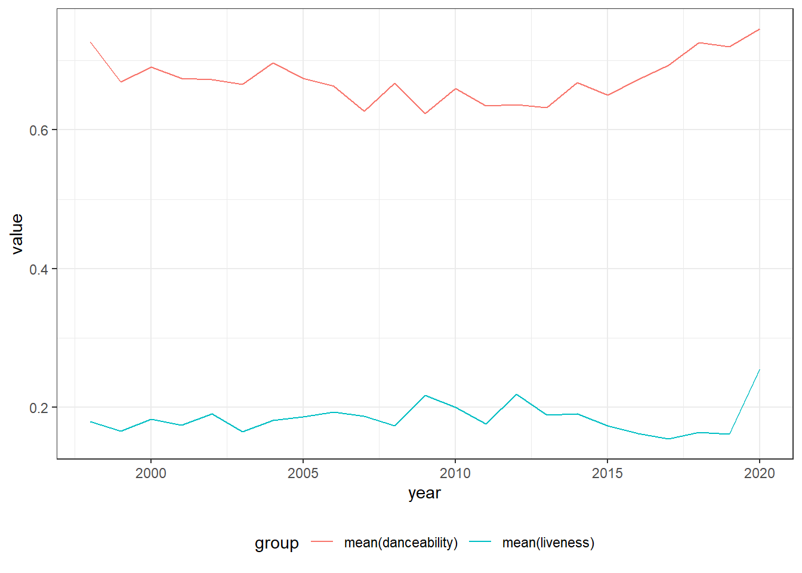

Friday_Lab1310
Exercise 1
Q1
The new data set contains 1926 songs, which is less than the previous data set with its 2000 songs. Using the distinct function reduces the number of observations, implying there was redundance in the original data (nth times the same song of the same artist).`
Q2
| year | n() |
|---|---|
| 1998 | 1 |
| 1999 | 30 |
| 2000 | 58 |
| 2001 | 77 |
| 2002 | 56 |
| 2003 | 64 |
| 2004 | 65 |
| 2005 | 69 |
| 2006 | 63 |
| 2007 | 66 |
| 2008 | 63 |
| 2009 | 61 |
| 2010 | 62 |
| 2011 | 69 |
| 2012 | 67 |
| 2013 | 64 |
| 2014 | 70 |
| 2015 | 69 |
| 2016 | 75 |
| 2017 | 86 |
| 2018 | 81 |
| 2019 | 73 |
| 2020 | 3 |
This table shows how many artists appear every year in the data. One artist’s appearance is only counted once every year.
Q3
| artist | num_song |
|---|---|
| Rihanna | 23 |
The most popular artist is Rihanna.
Q4
| min(tempo) | max(tempo) | mean(tempo) | median(tempo) |
|---|---|---|---|
| 60.019 | 210.851 | 120.1638 | 120.028 |
This table summarizes the mininum, maximum, mean and median of the variable tempo. This represent a good amount of descriptives. Which may then help as to how to deal with the variable.
Q5
| min(tempo) | max(tempo) | mean(tempo) | median(tempo) |
|---|---|---|---|
| 60.019 | 210.851 | 120.1638 | 120.028 |
This table summarize the mean liveness and danceability of songs on a yearly basis. It gives a numerical representation to the graph that follows in the next question.
Q6
This graph shows both the mean danceability and liveness of songs in the data set, on a yearly basis. This visualization is not very effective in showing any form of correlation between the two variables. Perhaps, reducing the visual distance between the two lines or using another type of graph could help in doing that.
Exercise 2
Q1
| Target | Marital status | MedA |
|---|---|---|
| Dropout | single | 123.35 |
| Dropout | married | 126.50 |
| Dropout | divorced | 126.50 |
| Dropout | widower | 129.40 |
| Dropout | facto union | 119.40 |
| Dropout | legally separated | 112.50 |
| Graduate | single | 127.30 |
| Graduate | married | 130.00 |
| Graduate | divorced | 126.00 |
| Graduate | widower | 170.00 |
| Graduate | facto union | 120.00 |
| Graduate | legally separated | 114.80 |
| Enrolled | single | 124.05 |
| Enrolled | married | 122.95 |
| Enrolled | divorced | 130.20 |
| Enrolled | widower | 151.75 |
| Enrolled | facto union | 119.70 |
| Enrolled | legally separated | 119.00 |
| Target | single | married | divorced | widower | facto union | legally separated |
|---|---|---|---|---|---|---|
| Dropout | 123.35 | 126.50 | 126.5 | 129.40 | 119.4 | 112.5 |
| Graduate | 127.30 | 130.00 | 126.0 | 170.00 | 120.0 | 114.8 |
| Enrolled | 124.05 | 122.95 | 130.2 | 151.75 | 119.7 | 119.0 |
Without the pivoting it was looking quite ugly. Now it is much more readable. We can make within-groups and between-groups comparison on the median admission grade, accounting both for the Target var and the Marital status var.
Q2
| Marital status | Dropout | Graduate | Enrolled |
|---|---|---|---|
| single | 123.35 | 127.3 | 124.05 |
| married | 126.50 | 130.0 | 122.95 |
| divorced | 126.50 | 126.0 | 130.20 |
| widower | 129.40 | 170.0 | 151.75 |
| facto union | 119.40 | 120.0 | 119.70 |
| legally separated | 112.50 | 114.8 | 119.00 |
Funnily, I basically did the thing in a reverse fashion on the first question. As we can see here, we enjoy the same properties as with the previous form. It is a bit easier to read though I would argue.
Q3
| Gender | Curriculars units 1st credited | Curriculars units 1st enrolled | Curriculars units 1st evaluations | Curriculars units 1st approved | Curriculars units 1st grade | Curriculars units 1st without evaluations | Curriculars units 2nd credited | Curriculars units 2nd enrolled | Curriculars units 2nd evaluations | Curriculars units 2nd approved | Curriculars units 2nd grade | Curriculars units 2nd without evaluations |
|---|---|---|---|---|---|---|---|---|---|---|---|---|
| Male | 0 | 6 | 8 | 4 | 11.83333 | 0 | 0 | 6 | 8 | 4 | 11.63604 | 0 |
| Female | 0 | 6 | 8 | 6 | 12.50000 | 0 | 0 | 6 | 8 | 5 | 12.50000 | 0 |
This table shows the median of the different curricular units variable of the data set, conditional on gender.
Q4
| Units | Male | Female |
|---|---|---|
| Curricular units 1st sem (approved) | 4.00000 | 6.0 |
| Curricular units 1st sem (credited) | 0.00000 | 0.0 |
| Curricular units 1st sem (enrolled) | 6.00000 | 6.0 |
| Curricular units 1st sem (evaluations) | 8.00000 | 8.0 |
| Curricular units 1st sem (grade) | 11.83333 | 12.5 |
| Curricular units 1st sem (without evaluations) | 0.00000 | 0.0 |
| Curricular units 2nd sem (approved) | 4.00000 | 5.0 |
| Curricular units 2nd sem (credited) | 0.00000 | 0.0 |
| Curricular units 2nd sem (enrolled) | 6.00000 | 6.0 |
| Curricular units 2nd sem (evaluations) | 8.00000 | 8.0 |
| Curricular units 2nd sem (grade) | 11.63604 | 12.5 |
| Curricular units 2nd sem (without evaluations) | 0.00000 | 0.0 |
The final table offers a better view on how the median units conditional on gender. Allowing for better between groups (Male/Female) comparisons.